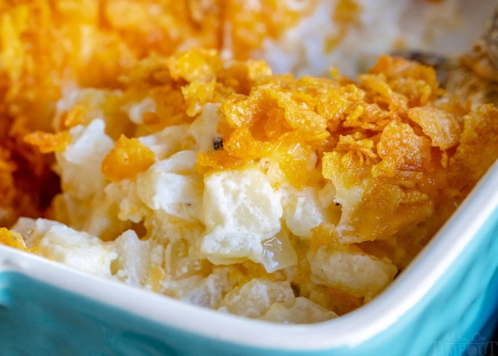

Funeral Potatoes
Ingredients you will need
- diced hash bronw potatoes
- butter
- all purpouse flour
- salt and freshly ground black pepper
- sour cream
- sharp cheddar and monterey jack cheese
- onion
- garlic cloves
- low sodium chicken broth (or stock)
- milk
- cornflakes
How to make the Funeral ptatoes
- Preheat the oven to 350F and Butter a 9x13 baking dish and set it aside.
- Place the potatoes in a bowl and toss with melted butter and salt and pepper.
- Stir in sour cream and 2 cups of cheese
- Pour cream of chicken sauce over the potato mixture and gently fold to combine.
- transfer to prepared baking dish. Top with the remaining cheese
- combine melted butter and cornflakes and spread over the top.
- Cover and bake for 20 minutes.!

Look for more recipes!